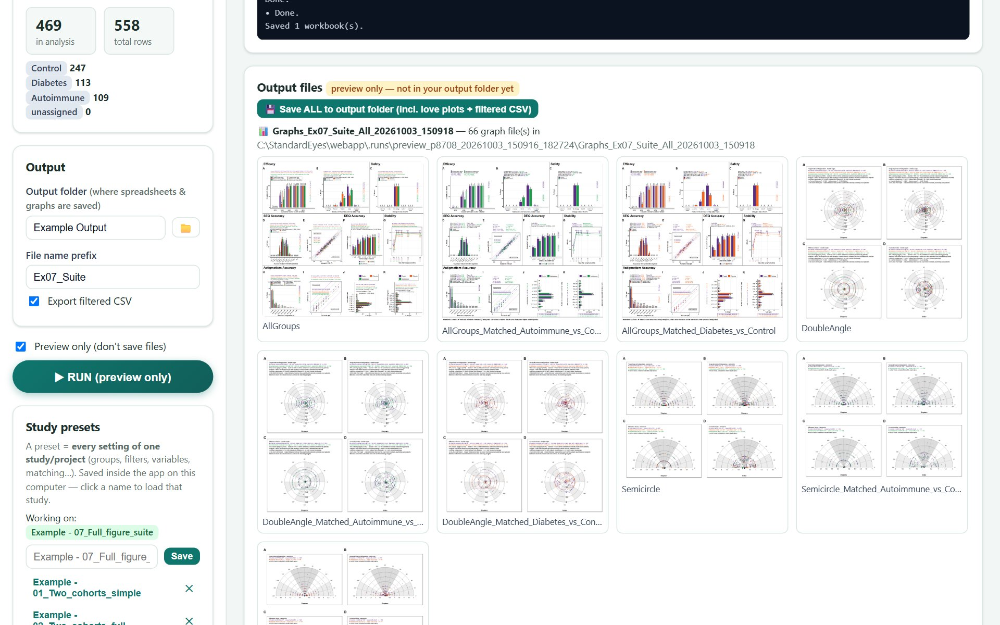
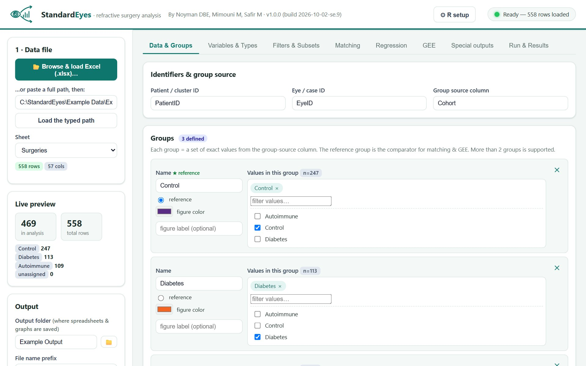
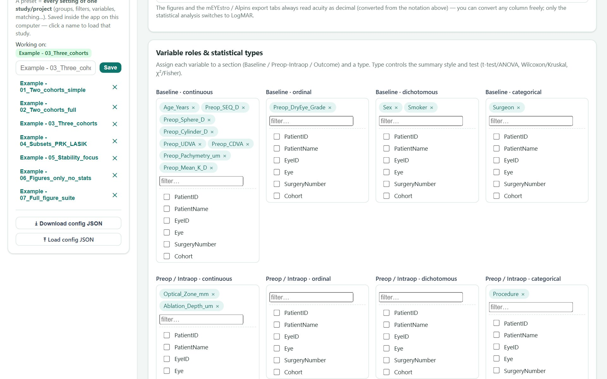

Compare refractive-surgery cohorts the standard way.
StandardEyes turns a one-row-per-eye spreadsheet into publication-ready tables and figures for any number of groups. Tests are chosen for you, models clustered on the patient account for both eyes of one person, and every group is drawn on the same chart. It runs on your own computer, and your data never leaves it.

Every step of a comparison, in one run you can check
Single-group tools draw the standard graphs for one group. StandardEyes is built for the question that comparative papers ask: how do these groups differ?
Group tables with the right test
Continuous, ordinal, dichotomous and categorical variables each get a fitting summary and test, for two groups or more. The summary sheets name the test beside every P value. Visual acuity can be decimal, logMAR, Snellen or ETDRS letters.
Propensity-score matching
A live preview shows how many eyes each group keeps before you run. Balance is shown as standardized mean differences and in a love plot, a chart of each covariate's imbalance before and after matching.
Two eyes, one patient
Statistical models (GEE, generalized estimating equations) treat the two eyes of one patient as related. Patient-level variables are counted once per person, and the P values on the figures account for the pairing too.
The StandardEyes figures
The standard refractive-surgery graphs with every group on one chart in its own colour, and a stability-over-time curve built from your follow-up visits.
Astigmatism to the JCRS standard
Double-angle plots show each group's mean astigmatism vector (the centroid) with its confidence region and a 95% region of the eyes. The centroids are compared with one two-dimensional test.
Workbooks a reviewer can open
Excel files with a contents page, a publication-style table and a sheet that lists the main settings and the software versions of the run.
Straight from the bundled example
Simulated groups, one run, nothing edited afterwards. Click a figure to enlarge it.
Four steps from spreadsheet to manuscript
Load your Excel file
One row per eye per surgery. Both eyes, retreatments and mixed plus/minus cylinder are handled explicitly.
Define groups and roles
Pick the groups and the reference group that the others are compared with, and say what each column is. Nothing is guessed from a column name.
Choose the analysis
Inclusion rules with live counts, matching, regression, GEE and the figure options.
Run, preview, save
Look at the tables and figures inside the app, then save. A preset (one small file that holds every setting of the study) repeats the analysis in one click.


Everything you need to try it today
The app
Download, install in three steps, and troubleshooting.
DownloadExample data and settings
Two simulated datasets and seven worked studies, with their outputs.
Browse examplesVideo tutorials
Six short videos that follow one analysis from start to finish.
WatchHow it works
Which test is used when, how matching and GEE are set up, and how to read the figures.
Read how it worksFor Ophthalmologists, By Ophthalmologists
We are ophthalmologists who analyse this kind of data. StandardEyes grew out of our own refractive-surgery research, where each comparative study meant rebuilding the same analysis by hand.
Ready to run your first comparison?
Download the app, open one of the example studies, and press Run. It takes about five minutes.